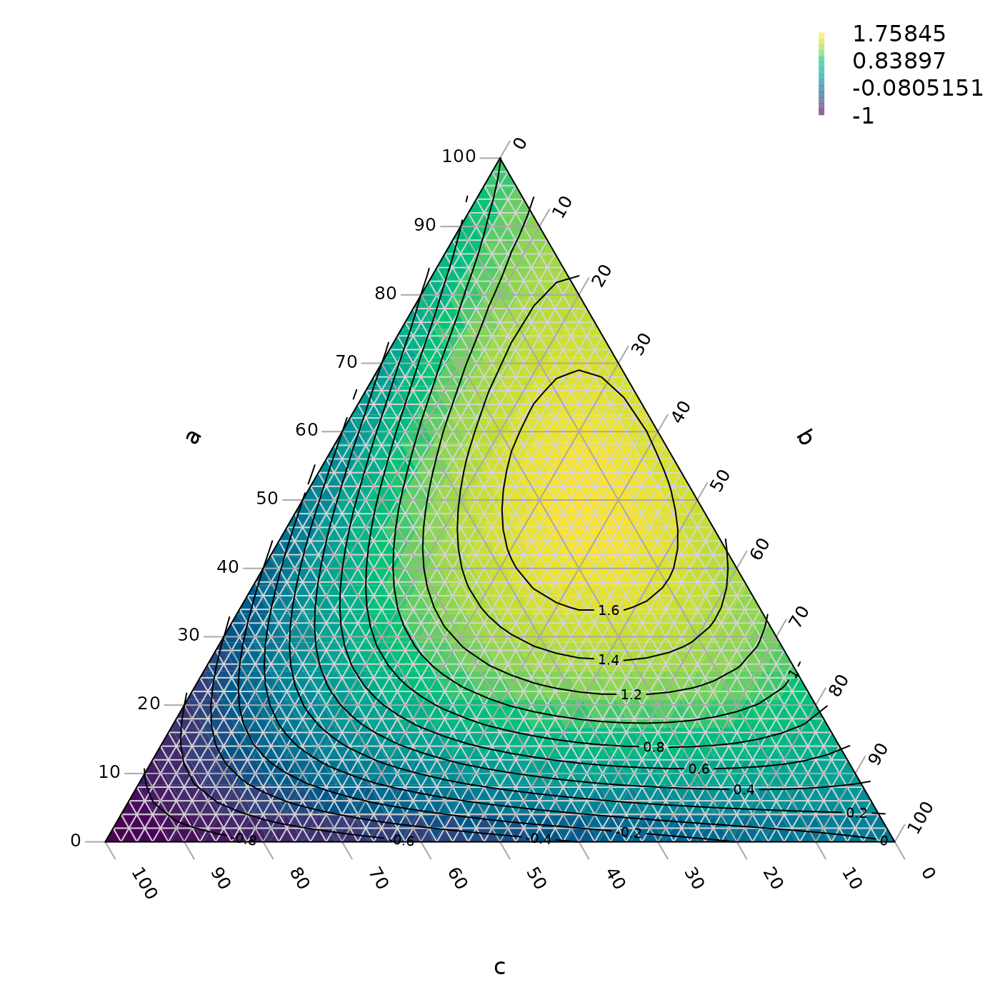
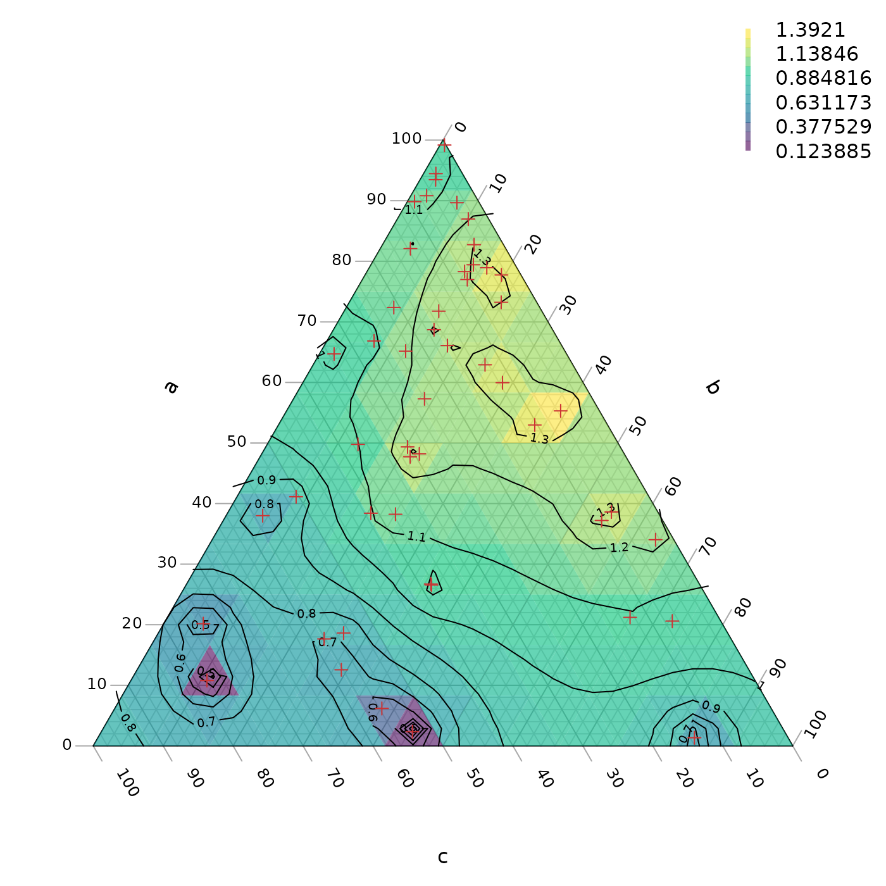

Interpolating and contouring
Martin R. Smith
2026-02-03
Source:vignettes/interpolation.Rmd
interpolation.RmdBefore you start, have you read the introduction to the Ternary package?
A ternary plot can be shaded and contoured according to a known function:
library("Ternary")
par(mar = rep(0.2, 4))
FunctionToContour <- function(a, b, c) {
a - c + (4 * a * b) + (27 * a * b * c)
}
values <- TernaryPointValues(FunctionToContour, resolution = 24L)
TernaryPlot(alab = "a", blab = "b", clab = "c",
# Place an opaque fill behind grid lines:
panel.first = ColourTernary(values, spectrum = hcl.colors(256)))
TernaryContour(FunctionToContour, resolution = 36L, legend = TRUE,
legend... = list(bty = "n"))
If it is not computationally feasible to execute a function at every point, it is possible to interpolate between known values.
Inverse distance weighting is a simple approach:
# If using your own data, set
# abc <- [Three-column matrix containing a, b, c coordinates of points]
# response <- [Vector of values at the points specified in abc]
# We'll use random data for this example.
# First we'll generate some points at which to sample:
set.seed(0)
nPts <- 50
a <- runif(nPts)
b <- runif(nPts) * (1 - a)
c <- 1 - a - b
abc <- rbind(a, b, c)
# Then we'll measure the response variable at each of those points:
response <- FunctionToContour(a, b, c)
# Now we must start a plot, to define the coordinate system
par(mar = rep(0.2, 4))
TernaryPlot(alab = "a", blab = "b", clab = "c")
# Convert measured points to XY
xy <- TernaryToXY(abc)
# Use an inverse distance weighting to interpolate between measured points
Predict <- function(predXY) {
Distance <- function(a, b) {
apply(a, 2, function(pt) sqrt(colSums((pt - b) ^ 2)))
}
dists <- Distance(xy, predXY)
id <- 1 / dists
idw <- id / rowSums(id)
# Return:
colSums(response * t(idw))
}
# Predict at triangle centres
tri <- TriangleCentres(resolution = 12L)
# Adjust the resolution to suit your own dataset
# Now we interpolate between our known values to generate a colour for each
# of our tiles
predicted <- Predict(tri[1:2, ])
map <- rbind(x = tri["x", ], y = tri["y", ], z = predicted,
down = tri["triDown", ])
# Place a semitransparent colour fill over grid lines:
ColourTernary(map)
# Calculate contours
PredictABC <- function(a, b, c) Predict(TernaryToXY(rbind(a, b, c)))
TernaryContour(PredictABC, resolution = 36L, legend = 6,
legend... = list(bty = "n"))
# Mark the points at which we took measurements
TernaryPoints(abc, pch = 3, col = "#cc3333")
More sophisticated interpolation approaches are possible, e.g. kriging; these may help to alleviate artefacts of sampling intensity as observed towards the bottom of the example plot above.
Interpolation within a sampled region
We might also encounter a situation where we have only sampled a small region of ternary space and do not wish to extrapolate beyond this region.
# Select some points at which to sample
set.seed(0)
nPts <- 50
a <- runif(nPts, 0.3, 0.7)
b <- 0.15 + runif(nPts, 0, 0.7 - a)
c <- 1 - a - b
abc <- rbind(a, b, c)
# Measure the response variable at each of those points:
response <- FunctionToContour(a, b, c)
# Convert measured points to XY
xy <- TernaryToXY(abc, direction = 1)
# Start a plot, to define the coordinate system
par(mar = rep(0.2, 4))
TernaryPlot(alab = "a", blab = "b", clab = "c",
# Only plot the sampled region:
xlim = range(xy["x", ]), ylim = range(xy["y", ])
)
# Get centres of tiles to plot
tri <- TriangleCentres(resolution = 36L)
# Adjust the resolution to suit your own dataset
# Calculate which triangular tiles are within the boundaries of our data
inHull <- TriangleInHull(tri, abc)
# Pre-generate an empty list of predictions
predicted <- rep(NA, ncol(tri))
# Now we interpolate between our known values to generate a colour for each
# of our tiles
predicted[inHull$inside] <- Predict(tri[1:2, inHull$inside])
map <- rbind(tri, z = predicted)
# Colour only those tiles where we have made a prediction
ColourTernary(map)
# Calculate contours
PredictABC <- function(a, b, c) Predict(TernaryToXY(rbind(a, b, c)))
TernaryContour(PredictABC, resolution = 36L,
# `within` controls where contours are calculated
within = inHull$hull)
# Mark the points at which we took measurements
TernaryPoints(abc, pch = 3, col = "#cc3333")
# Mark the region in which we sampled
polygon(t(xy)[chull(t(xy)), ], border = "#cc3333")